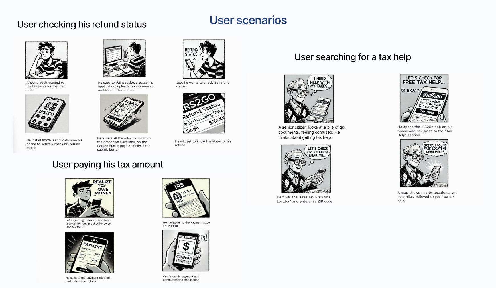
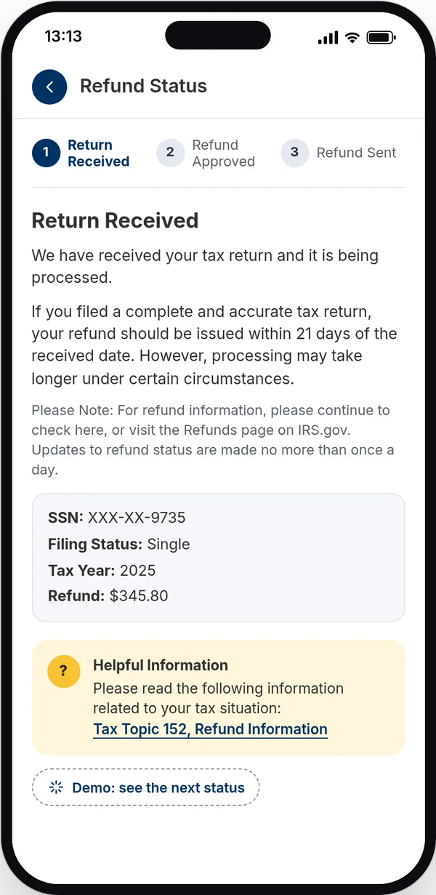
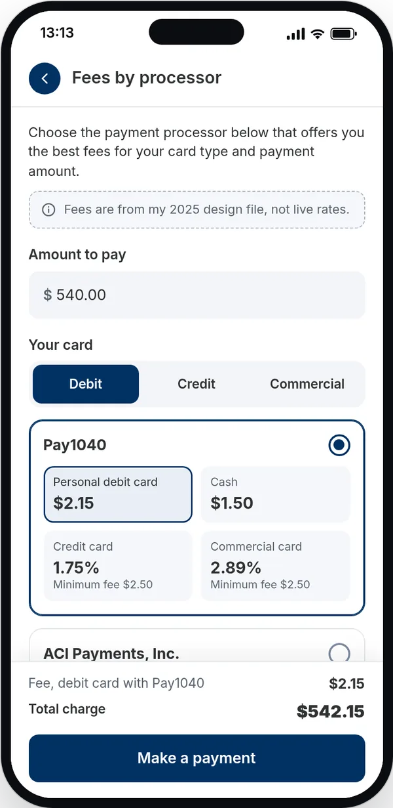
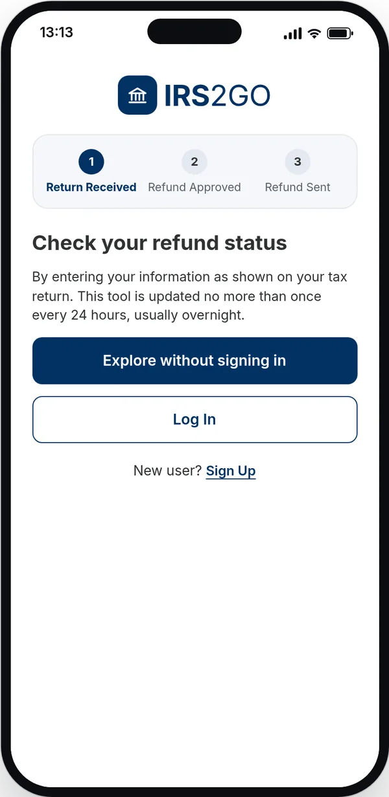

Course projectGovernment app · 5 min read
Making the IRS app easy to use
IRS2Go is the IRS's official app. It was rated 2.8 stars, and 45% of people quit before finishing a task. In a team of 5, we redesigned the three things people open it for: checking a refund, paying, and finding free tax help. Then we tested the old app against the new one.
TestedTested with people, old app vs redesign
A government app people gave up on
People open IRS2Go to check a refund, pay what they owe, or find free tax help. All three were hard: forms rejected correct details, payments bounced out to the website, and help didn't cover refunds or payments.
Why: When a tax app confuses people, they start to doubt the agency behind it.
- 2.8 ★App Store rating
- 45%quit before finishing a task
- 0original screens met WCAG 2.1 AA
Find where it breaks
We read 150+ app reviews, interviewed taxpayers, watched people try each task in the old app, and checked it against 10 usability rules. Then we wrote out every step of each task to see exactly where people got stuck.
- Refunds: Tax Year looked like a text box but was a list, the SSN was split across 3 boxes, and the refund amount had to match to the cent.
- Payments: the app sent people to the IRS website and through several more pages, and some still couldn't pay.
- Tax help: it explained ways to file, but nothing about refunds or payments.
Why: Writing out every step showed the cause of each failure, so we fixed causes instead of symptoms.
Sketch each fix as a story
We storyboarded three everyday scenarios: a first-time filer checking his refund, the same person finding out he owes money, and a senior looking for free help with a pile of forms.
- 3 clear choices on Home, instead of 7 equal menu items.
- A refund timeline: Received, Approved, Sent.
- A summary before any payment.
- No account needed to check a refund.
Why: Stories kept every idea tied to a real moment we had seen, not a screen in isolation.

Every task finishes inside the app
The redesign uses clear labels, one main action per screen, big tap targets, and a tab bar for Refunds, Payments and Tax Help, so no task is buried.
After: labels, examples and a sample form. Key decision 1Help before the error
The thinking: The old form explained its rules only after people got them wrong. Now every field has a label and an example, and a sample form shows where each answer is on your return.
TestedPart of the redesign that scored 78.25.

Refund status in three clear steps. Key decision 2The answer as a timeline
The thinking: "Return Received" gave no date and no next step, and 68% of people left the old flow without a clear answer. Now the status reads Received, Approved, Sent.
TestedPart of the redesign that scored 78.25.

Fees side by side, and the total before paying. Key decision 3Pay without leaving the app
The thinking: The old app sent people out to the website in the middle of paying. Now each payment option sits in the app, with its fees side by side, so people can compare before they choose.
TestedIn the final design, all three tasks finish inside the app.
Old app against new, then fix
People did the same tasks on the old app and the redesign while thinking out loud. Then they rated each version with the System Usability Scale (SUS), a standard 10-question survey scored out of 100.

Explore without signing in comes first. Changed after testingGuests first
The thinking: Many people quit at the login screen; they wouldn't log in just to check a refund. So "Explore without signing in" became the main button.
TestedNobody dropped off at login after the change.
-
Changed after testing
A summary before paying
The thinking: 3 of 6 testers hesitated to pay because they couldn't see a summary first. We added a confirmation screen with the total before the pay button.
TestedAfter the change, 0 of 6 were worried about paying.
Usability more than doubled
- 31.3 → 78.25SUS, well above the 68 average
- 100%of redesigned screens passed my WCAG 2.1 AA check
- 0trips out to the website
- No accountneeded to check a refund
Bad UX costs trust
In a government app, a confusing screen makes people doubt the agency itself.
Guests first
Letting people in without an account isn't a shortcut. It's how they reach the answer.
Confirm what matters
A summary before paying calmed people more than any form design could.
What I'd do differently now
Ideas for a next version, not built yet.
A plain-language helper
Ask "why is my refund late?" and get an answer in plain words, with a link to the official source.
Help while you type
Catch a wrong format in a field before you submit, instead of after an error.
Did you like this case study?
Tell me what worked, or what you'd change. It comes straight to me.